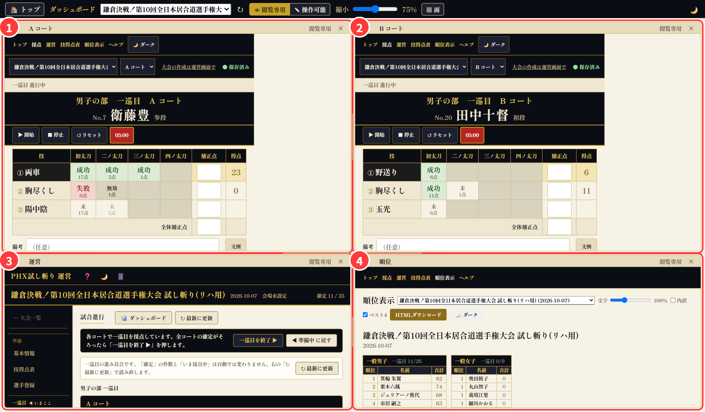
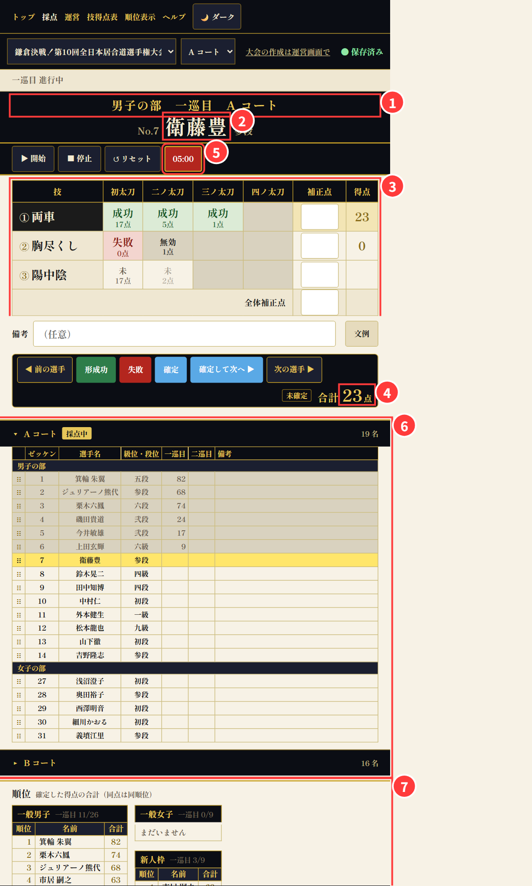
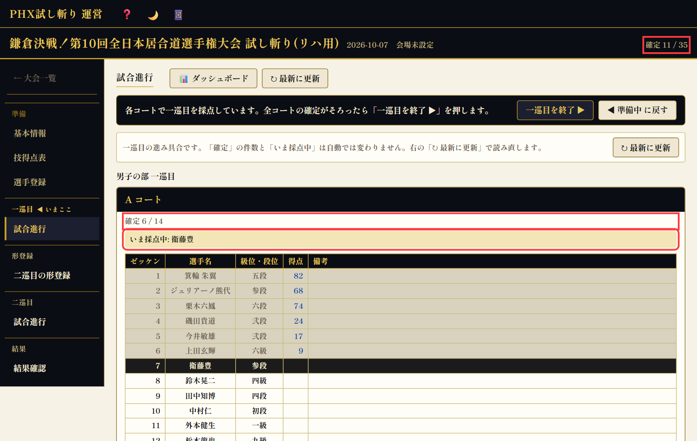
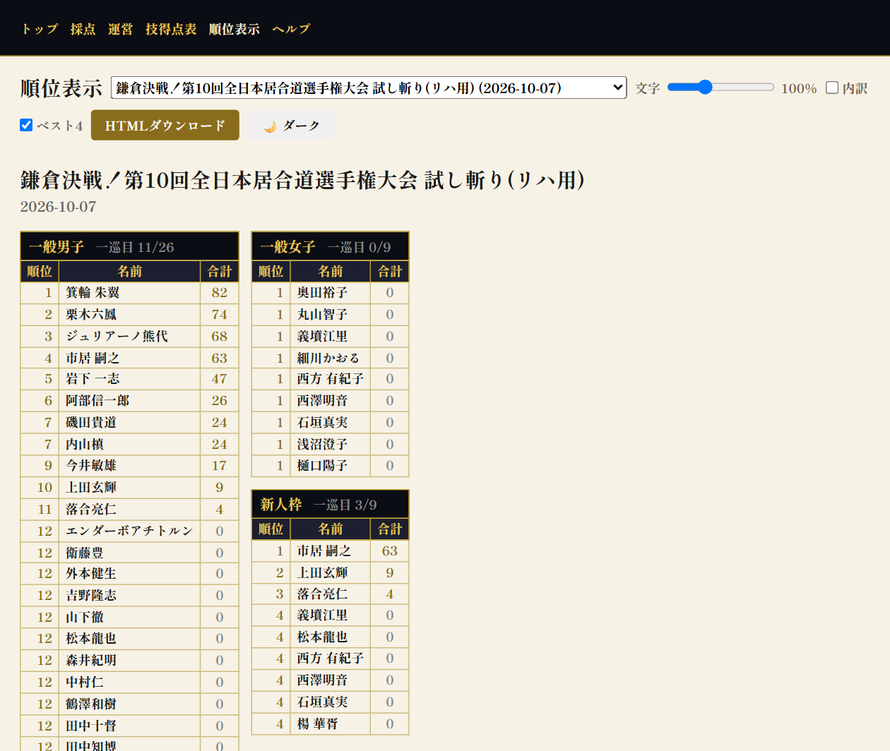
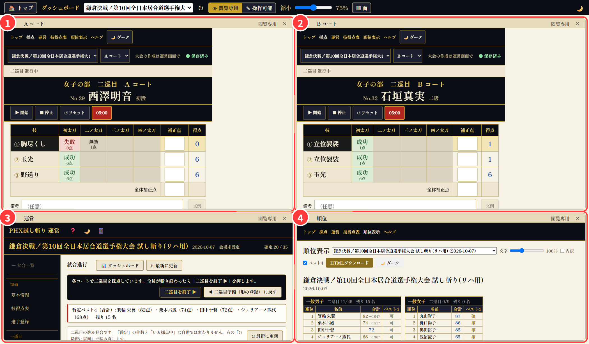
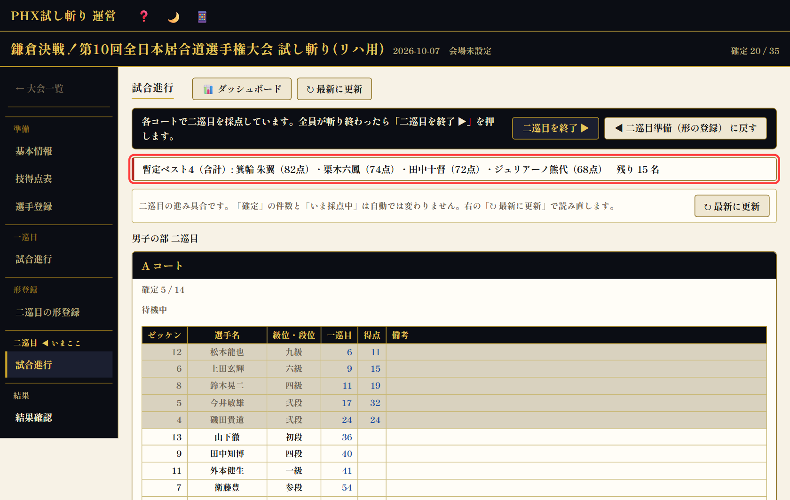
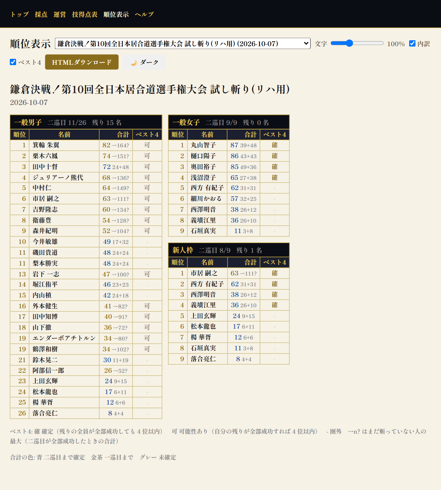
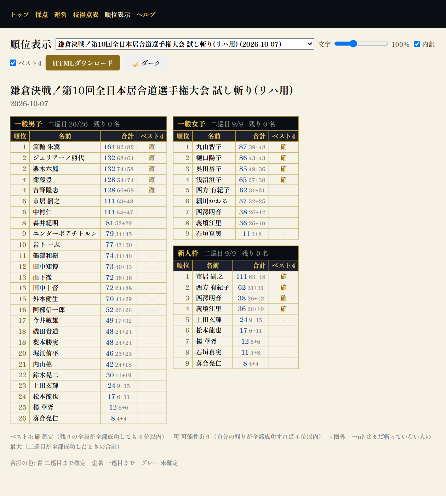
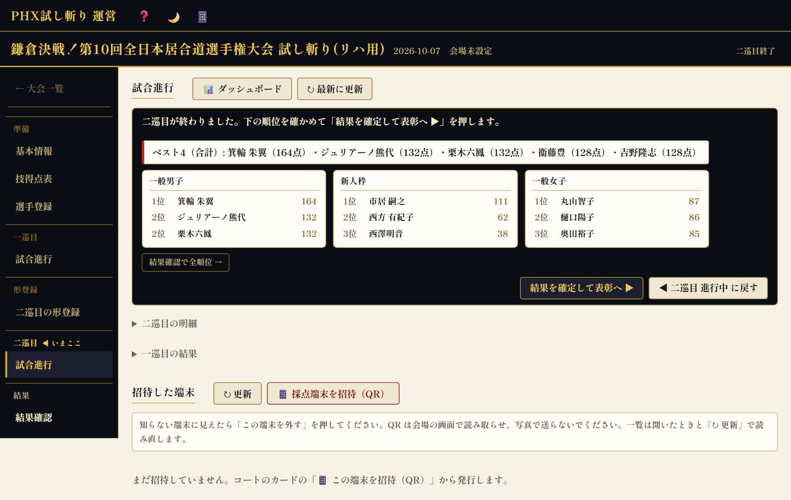

実況席向け 画面の見かた（ダッシュボード）
実況席の PC にはダッシュボードを開いておきます。採点・試合の進み具合・順位が 1 画面に並び、見ているだけで最新になります（10 秒ごと）。写真はリハーサル用の名簿で撮ったもので、得点は撮影用の仮の値です。
1. 画面の全体 4 つの面

| 12A コート／B コート | そのコートでいま斬っている選手と、技ごとの採点がリアルタイムに出ます。採点席のタブレットと同じ内容で、タイマーも採点席に合わせて動きます。見るだけの面なので、触っても採点は変わりません（採点はできず、選手を見ることはできます。2. 参照）。 |
|---|---|
| 3運営（試合進行） | 大会がいまどの段階か（一巡目・二巡目など）、各コートの「確定 n / N」（何人斬り終えたか）、「いま採点中: 名前」が分かります。二巡目の間は上に暫定ベスト4の 1 行が出ます。 |
| 4順位 | 部門ごとの順位表。確定した得点だけを合計します。二巡目の間は「ベスト4」の列と「内訳」が使えます（後述）。 |
上の帯: 👁 閲覧専用 のままにしておきます（採点はできない安全な状態。選手を見ることはできます）。縮小 のつまみで 4 面の大きさを変えられ、各面の見出しの − ＋ でその面だけの倍率も変えられます。面を閉じてしまったら ▦ 面 から戻せます。↻ は全部の面を読み直します。
2. 採点の面の見かた 何点入ったかはここで分かる

| 1部・巡目・コート | 「男子の部 一巡目 A コート」。いまどの部の何巡目かを常に確かめられます。 |
|---|---|
| 2ゼッケン・名前・段位 | いま斬っている選手。「No.7」はゼッケンです（呼び出しもゼッケンで行います）。 |
| 3技と太刀の表 | 縦に 3 つの技、横に初太刀〜四ノ太刀。太刀ごとの結果と配点が出ます。技によって太刀の数が違い、灰色の枠は「その技に無い太刀」です。 |
| 4合計 | その選手のこの巡の得点。採点席が「確定」を押すと確定になり、順位に反映されます。確定前は「未確定」の印が付きます。 |
| 5タイマー | 採点席が押した 5 分のカウントダウンがそのまま映ります。 |
| 6選手一覧 | このコートの試技順。灰色の行は確定済み、黄色の行がいま斬っている選手（閲覧専用で別の選手を見ているときは、見ている選手が黄色。採点席の選手は帯に出ます）、白い行はこれから。得点の列に確定した点が入ります。行を押すと、その選手の内訳が出ます（採点席が次の選手に進むと自動で採点中の選手に戻ります。上に出る「採点中: ○○ ▶ 戻る」の帯の ▶ 戻る で手でも戻せます）。他のコートの行は押しても動きません。 |
| 7順位 | 面の下にも簡単な順位表があります（右下の順位の面と同じ内容）。 |
太刀の結果の読みかた
| 成功 | その太刀の配点が入ります（例「成功 17点」）。 |
|---|---|
| 失敗 | 0 点。失敗より後ろの太刀は「無効」になり、その技はそこで終わりです。 |
| 減点 | 成功はしたが減点つき（初太刀だけ。配点が下がります）。 |
| 未 | まだ斬っていない太刀。薄い字の数字はその太刀の配点です。 |
| 補正点 | 審判が入れる加点・減点。技ごとと全体の 2 種類があり、合計に足されます。 |
実況のヒント: 配点は技ごとに違います（難しい技ほど高い）。表の「未」の薄い数字を見れば「この太刀が決まれば何点」が分かるので、「次の太刀が決まれば 17 点、合計 40 点に乗ります」のように先読みできます。
3. 試合の進みかた 一巡目 → 二巡目 → 確定
- 一巡目: 各コートで試技順に全員が 3 つの技を斬ります。コートは同時進行なので、A と B の面を交互に見ます。
- 一巡目終了: 全員の確定が揃うと運営が「一巡目を終了」を押します。ここで二巡目の行が自動で作られ、二巡目の試技順は一巡目の得点が低い人からになります（上位ほど後ろ）。二巡目で形を変える選手はこの間に登録されます。
- 二巡目: もう一度全員が 3 つの技を斬ります。合計は一巡目＋二巡目です。
- 二巡目終了 → 最終結果: 全員の確定が揃うと順位が確定し、表彰へ進みます。

実況のヒント: 「確定 6 / 14」なら「A コートは 14 人中 6 人が終了」。残り人数と、いま誰が斬っているかはこの面でひと目で分かります。
4. 順位の確かめかた 右下の面

- 部門は 3 つ: 一般男子・新人枠・一般女子。新人枠の選手は一般の順位にも入ります（新人枠は別枠の表彰）。
- 合計の色: 金茶＝一巡目まで確定、青＝二巡目まで確定、グレー＝未確定（まだ斬っていない）。
- 同点は同順位です（例: 4 位が 2 人なら次は 6 位）。
- 一巡目の途中は、まだ斬っていない人が 0 点で下に並びます。「順位」というより「ここまでの得点の高い順」と読んでください。
5. 二巡目とベスト4 終盤の見どころ


- ベスト4は一般男子の合計（一巡目＋二巡目）の上位 4 名です。二巡目の間は「暫定」で、残りの人数が 0 になると確定します。同点は全員入ります。
- 二巡目の試技順は一巡目の得点が低い順なので、後半ほど上位候補が出てきます。運営が「上位候補を最後に回す」並べ替えをすることもあります。

| 確 | ベスト4 確定。残りの全員が全部成功しても 4 位以内。 |
|---|---|
| 可 | 可能性あり。自分の残りが全部成功すれば 4 位以内に届く。 |
| - | 圏外。もう 4 位以内には届かない。 |
| 82→164? | 一巡目 82 点、二巡目はまだ。二巡目が全部成功すると最大 164 点。 |
| 24+48 | 一巡目 24 点＋二巡目 48 点＝合計 72 点（二巡目まで確定）。 |
内訳の出しかた: 順位の面の上の 内訳 にチェックを入れます。順位の面は閲覧専用のままでも触れるので、そのままチェックできます。別のタブで順位表（順位表示）を開いておく方法でも構いません。
実況のヒント: 「可」の選手が斬る番になったら「ここで 60 点以上を出せばベスト4 に入ります」のように、「→164?」の数字と 4 位の合計を見比べて伝えられます。
6. 二巡目が終わったら 確定した順位


7. 来場者・関係者に配るとき 観戦用ダッシュボード
運営画面の試合進行にある 📱 観戦用 QR で、見るだけの観戦ページの QR が出ます。スマホで読むと、この資料で説明した「採点の面」「確定 n / N」「順位」「暫定ベスト4」が 1 ページにまとまって出て、5 秒ごとに最新になります。実況席の予備の端末にもこれを出しておけます。
8. 困ったとき
- 面が古いままに見える: 上の帯の ↻ を押します（10 秒ごとに自動で読み直していますが、手動でも読めます）。
- 面を閉じてしまった: ▦ 面 から出し直せます。並びは面の見出しをドラッグして変えられます。
- 面の中を触ってしまった: 閲覧専用なら採点は何も変わりません（選手の内訳を見るだけです）。操作可能にしていた場合も、採点席の端末が正です。
- 選手の名前の読みや段位は、採点の面の名前の横（段位）と、運営の選手登録で確かめられます。